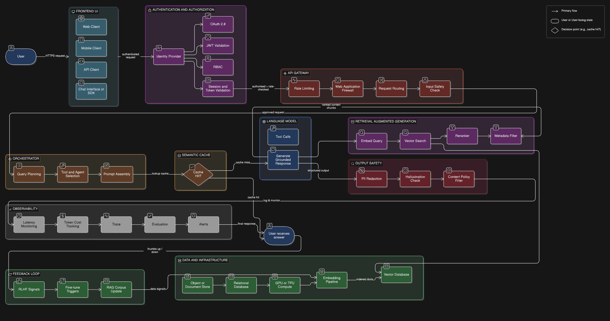

Every time you interact with an AI, there are layers of engineering working in perfect coordination behind that single response. This session goes beyond the model — and into the machine.
I'm a Principal AI Architect at Mastercard with over 10 years of experience building AI systems that operate at a scale most engineers only read about. My journey spans the full arc of modern AI — from writing Stanford NLP algorithms in Java to architecting cutting-edge Multi-Agent AI systems powering global financial infrastructure today.
At Mastercard, I've worn multiple hats — Lead ML Engineer, ML Engineering Manager, and now Principal AI Architect — where I design large-scale Agentic AI platforms, Responsible AI services, and oversee a portfolio of 700+ predictive models in production. I hold a Master's degree in Computer Applications.
"No matter how advanced AI gets, every production-ready solution will always stand or fall on the strength of its engineering foundation. Great AI is less about magic — and more about very clever plumbing."
How many of you have trained a machine learning model? Probably most of you. Now — how many of you have deployed one to a million real users? That silence is exactly where today's session lives.
There is a natural and necessary gap between what education prepares you for and what industry demands on day one — and not enough people talk about it openly. It is not a flaw in how you are being taught. It is simply the reality that building things at scale introduces a completely different set of engineering problems that only become visible once you are in the middle of them.
In a live system, your model is rarely the hardest problem. The data pipelines, the latency, the hallucinations, the cost, the monitoring — that is where engineers spend most of their time.
I've spent 10 years on the production side of this. At Mastercard, I oversee 700+ predictive models running live. I've seen brilliant models fail spectacularly — not because the model was wrong, but because everything around it wasn't engineered to survive contact with reality. Today I'm going to show you what that "everything around it" looks like.
You've studied the OSI model in networking — seven layers, each with a specific job. A modern AI system works the same way. When a user types a question and hits send, here is what actually happens underneath.
Today we go deep on Layer 04 — RAG and Layer 03 — LLMs & SLMs. These are where the most interesting engineering decisions live, and where the biggest misconceptions exist.

Stop thinking of an AI system as one magical brain. Think of it as a coordinated kitchen — multiple specialists, each doing exactly one thing well, in a precise sequence.
Takes your order, checks it's on the menu, verifies you can pay, and routes it correctly. Doesn't cook anything — but nothing gets cooked without going through them first.
API Gateway · Auth · Safety FiltersIf you order a 5-course meal, the manager ensures the appetizer arrives before dessert. Coordinates multiple moving parts so the overall experience stays coherent.
Orchestrator · LangChain · LlamaIndexAll the ingredients — your private, proprietary data — live here. The chef only pulls exactly what's needed for your specific dish, right now.
Vector DB · RAG · EmbeddingsDoes the actual cooking — the language processing. Extraordinarily skilled. But completely useless without ingredients. And very expensive per hour of compute time.
LLM · SLM · GPT-4 · Llama · Phi-3A restaurant fails not because the chef is bad — it fails because the waiter took the wrong order, the pantry ran out of ingredients, or the manager lost track of a table. AI systems fail exactly the same way.
A Large Language Model is, at its core, a very well-read autocomplete. It has read a significant portion of the internet, learned the statistical patterns of human language, and became extraordinarily good at predicting what word comes next — with context, at scale, and with surprising coherence.
But here is the critical limitation: LLMs are frozen in time. They know nothing about your organisation's internal documents, nothing about what happened last week, and nothing about private data they have never seen. This is where the LLM vs SLM distinction becomes a real engineering decision — not an academic one.
At Mastercard, this is a real conversation we have for every AI feature: does this need a large model, or can a smaller, fine-tuned model do the job cheaper and faster? The answer changes everything — cost, latency, infrastructure footprint, and compliance posture.
LLMs are powerful but frozen. The naive answer is fine-tuning — retrain the model on your data. This sounds correct but is almost always the wrong engineering decision. It's expensive, slow, and in domains like banking or healthcare where data changes continuously, it simply doesn't scale.
The industry answer is Retrieval Augmented Generation — RAG:
Search your private data store for the most relevant chunks related to the user's query — semantically, not just by keyword
Attach those retrieved chunks to the prompt — hand the LLM a precise technical manual before asking it to answer
The LLM answers using only the provided context — grounded, accurate, and specific to your organisation's data
Think of it like an open-book exam. Without RAG, the LLM sits the exam with only what it memorised during training. With RAG, you hand it the exact chapter it needs — right before it answers.
The LLM is not the hard part of a RAG system. Finding, cleaning, chunking, embedding, and retrieving the right data — that is where real engineering happens. Strong fundamentals matter here.
The fundamentals being built in your degree are the foundation of every system described here. These are not separate worlds — they are the same engineering principles applied at different layers of the same stack.
Your search algorithms are the conceptual foundation of vector similarity search — the core of how RAG retrieves the right context at scale.
How your OS manages memory and schedules processes maps directly to how GPU clusters and batch inference jobs are orchestrated in production.
The API Gateway layer is pure networking — HTTP, rate limiting, load balancing. Every concept from your networking course lives here.
Vector databases are built on the same indexing and query optimisation principles you are learning. Understanding DBMS makes RAG storage intuitive.
Embeddings — the heart of RAG — are learned representations from neural networks. Your ML fundamentals explain precisely how they are trained and why they work.
Every layer of this stack is a microservice. Clean interfaces, separation of concerns, API design — SE principles keep these systems maintainable at scale.
Theory is useful. A working system is better. The notebook below walks through a minimal but complete RAG pipeline — stripped to its essential moving parts so the architecture is fully visible without noise.
Open in your browser, run every cell, have a working RAG system in under 10 minutes.
Stage 1 — Ingest: Take any PDF. Split it into chunks. Convert each chunk into an embedding using a sentence transformer. Store in a lightweight local vector store.
Stage 2 — Retrieve: Take the user's question. Convert it to an embedding. Find the top-3 most semantically similar chunks. This becomes your grounded context.
Stage 3 — Generate: Construct the prompt: [System: Answer only from context] [Context: chunks] [Question: user query]. The LLM answers from your data, not from memory.
Upload your own semester notes. Ask it questions from your syllabus. Watch it retrieve the right section and answer accurately. That is a production-grade concept running on your laptop.
The engineers who understand the full stack — not just the model — are the ones who build things that survive contact with reality.
Use the Colab notebook. Swap in your own data. Push it to Hugging Face Spaces — free and public. You now have a live deployed AI system on your resume. Not a notebook. A deployed product.
Researchers publish papers. Practitioners ship systems and write about what broke. Find engineers at companies you admire on LinkedIn and read what they share.
Uber, Netflix, LinkedIn, Airbnb — all publish how they built AI systems at scale. One post per week. By final year, you will think differently from every other candidate in a placement interview.
AI is not magic. It is very clever plumbing. And the engineers who understand the pipes — not just the model — are the ones who build things that last.